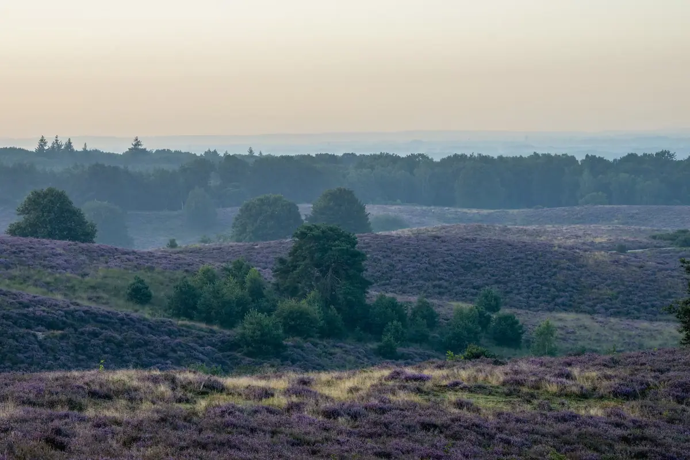
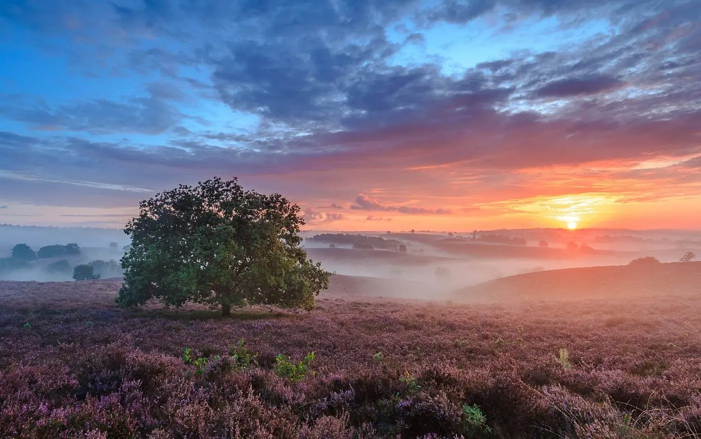
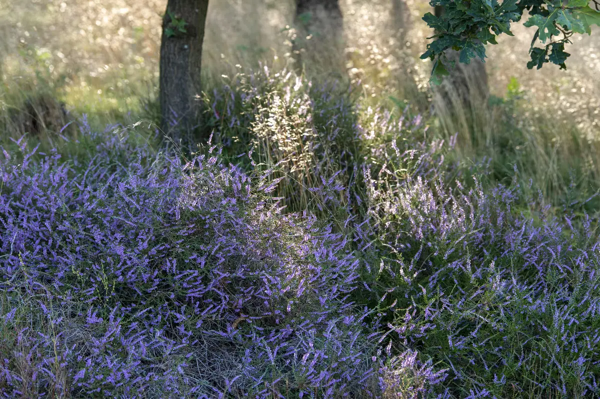

Althea viittaa kreikan kielessä eheytymiseen ja paranemiseen. Meille se merkitsee paluuta yhteyteen siihen, mikä meissä on aidointa, kaiken elämän aikana kertyneiden kokemusten, uskomusten, odotusten ja selviytymiskeinojen alla. Altheassa meitä kiinnostaa se, mitä voi tulla näkyväksi, kun ihminen saa riittävästi aikaa ja tilaa olla läsnä itsensä kanssa turvallisessa tilassa.
Oma prosessisi
Sukella syvälle itsesi ytimeen.
Ohjattu psilosybiinikokemus kutsuu pysähtymään oman elämäsi äärelle ja tutkimaan, mitä sinussa tapahtuu totuttujen roolien, odotusten ja toimintatapojen alla.
Ohjattu matka sisäiseen maailmaasi
Kokemus auttaa sinua näkemään omat uskomuksesi, reaktiosi ja toimintamallisi uudesta näkökulmasta sekä ymmärtämään paremmin niiden taustaa ja vaikutusta elämääsi. Kohtaamalla pelkosi ja puolustusmekanismisi suuremmalla ymmärryksellä, suhteesi itseesi voi muuttua myötätuntoisemmaksi. Samalla voit saada etäisyyttä toistuviin kaavoihin, mikä avaa tilaa uusille valinnoille, luovuudelle ja mahdollisuuksille. Kokemus auttaa sinua tunnistamaan, mikä elämässäsi on todella tärkeää ja mikä suunta tuntuu aidosti omalta.

Yhteys omiin tunteisiin
Kokemus syventää yhteyttä kehoosi, tunteisiisi ja psyykkeen eri osiin. Se tarjoaa mahdollisuuden kohdata ja avata niitä syviä sisäisiä kohtia, jotka ovat kulkevat mukanamme. Joskus aivan lapsuudesta saakka. Tarkoitus ei ole päästä eroon epämukavista tai vaikeista tunteista, vaan antaa niille tilaa tulla kohdatuksi turvallisessa ympäristössä. Tuntemalla tunteita, niiden alla oleva jumiutunut energia vapautuu ja luo tilaa syvemmälle sisäiselle rauhalle ja eheytymiselle.

Suhde itseen ja muihin
Kokemus avaa uusia näkökulmia siihen, miten kohtaat itsesi ja muut. Sen äärellä voit tutkia omia tarpeitasi, rajojasi ja tapojasi hakea yhteyttä tai suojata itseäsi sekä vahvistaa sisäisiä voimavaroja, jotka auttavat sinua olemaan vapaammin oma itsesi. Pariskuntana voitte tarkastella myös suhteessanne toistuvia tilanteita ja vuorovaikutuksen tapoja sekä sitä, mikä voisi vahvistaa yhteyttä, turvallisuutta ja molempien hyvinvointia. Tavoitteena on lisätä ymmärrystä sekä omasta että toisen kokemuksesta ja löytää avoimempia ja aidompia tapoja kohdata toisianne.
Merkityksellisyys ja henkinen kokemus
Psilosybiinikokemukseen voi liittyä syvä yhteyden tunne: itseen, läheisiin, luontoon tai elämään kokonaisuutena. Osa ihmisistä kuvaa kiitollisuutta, hyväksyntää tai syvää tunnetta siitä, että on osa jotakin itseään suurempaa. Henkinen kokemus voi olla myös vaikeasti sanoitettava.
Tällaiset kokemukset voivat auttaa hahmottamaan ja selkeyttämään omia arvoja ja sitä, mikä elämässä on itselle tärkeintä. Kokemuksen merkitystä tutkitaan aina omista lähtökohdista, ei ikinä ulkoapäin annettuna.

Elämä kokemuksen jälkeen
Ensimmäisinä päivinä ja viikkoina osa ihmisistä kuvaa lisääntynyttä avoimuutta, keveyttä tai yhteyttä itseensä ja muihin. Tavalliset asiat, kuten kohtaamiset läheisten kanssa tai luonnossa oleminen, voivat tuntua aiempaa merkityksellisemmiltä. Tätä kokemuksen jälkeistä vaihetta kutsutaan joskus jälkihehkuksi, englanniksi afterglow.
Tutkimuksissa psilosybiinin jälkeen on havaittu lisääntynyttä ajattelun joustavuutta. Kokemuksen jälkeisestä ajasta puhutaan mahdollisena neuroplastisuusikkunana: vaiheena, jossa uuden oppiminen ja totuttujen toimintatapojen tarkastelu voivat helpottua.
Arjessa tämä voi tarkoittaa tilaa ärsykkeen ja reaktion välissä. Huomaat ehkä tutun impulssin vetäytyä, puolustautua tai miellyttää, mutta voit pysähtyä ennen kuin toimit sen mukaan. Automaattisen reaktion rinnalle voi löytyä toinen tapa vastata: sellainen, joka tukee omia arvojasi ja tarpeitasi.
Integraatiossa autamme sinua jäsentämään kokemusta ja tunnistamaan, mitä haluat siitä mukaasi arkeen. Kokemuksen oivalluksille ja uusien näkökulmien asettumiselle on hyvä antaa aikaa. Kaikkea ei tarvitse ymmärtää tai muuttaa kerralla, vaan integraatio saa tapahtua omassa tahdissasi.
Valmistautuminen, kokemus ja integraatio muodostavat yhden kokonaisuuden. Fasilitaattorisi kulkevat rinnallasi ensitapaamisesta arkeen palaamiseen.
01
Kaksi valmistautumistapaamista
Suunta
Valmistautuminen ja intentio.
Tutustumme sinuun, elämäntilanteeseesi ja siihen, mitä toivot työskentelyltä. Sinun ei tarvitse tulla valmiiden tavoitteiden tai vastausten kanssa.
Arvioimme yhdessä terveystietosi, taustasi ja keskeiset turvallisuustekijät varmistaaksemme kokemuksen soveltuvuuden.
Käymme läpi toiveesi, huolesi ja rajasi sekä tutkimme mahdollista intentiotasi. Se voi toimia kokemuksen ankkurina, mutta voit myös antautua kokemukselle avoimin mielin ja antaa sen kulkea omaa suuntaansa.
Saat tietoa kokemuksen kulusta sekä ohjeet valmistautumiseen ja käytännön järjestelyihin.
02
Kokemuspäivä · noin 6–8 tuntia
Ohjattu kokemus
Tutkimusmatka sisäiseen maailmaan.
Kokemus toteutetaan yksityisessä ja rauhallisessa tilassa luonnonympäristössä. Julia ja Juho ovat läsnä koko kokemuksen ajan ja vastaavat kokemuksen jatkuvasta fasilitoinnista ja tuesta.
Aloitamme ohjatulla kehomeditaatiolla ja somaattisella harjoituksella joka auttaa hermostosi ja kehosi valmistautumaan kokemukseen turvallisesti.
Laadukkaiden psilosybiiniä sisältävien tryffelien käyttö ja annoskoko käydään huolellisesti läpi kanssasi etukäteen.
Kokemuksen päätteeksi pysähdymme siihen, mitä koit ja mitä tarvitset seuraavaksi.
03
Kaksi tapaamista · 2–6 viikon aikana
Integraatio
Oivalluksista konkreettisiin valintoihin.
Käsittely alkaa kokemuksen päätteeksi ja jatkuu kahdessa integraatiotapaamisessa samojen ohjaajien kanssa.
Annamme rauhallisen tilan kokemuksen herättämien tunteiden, kysymysten ja oivallusten käsittelylle.
Syvennytään kokemuksesi oivalluksiin, ja autetaan sinua integroimaan kokemusta osaksi arkeasi ja elämääsi.
Oivallukset voivat vähitellen muuttua laajaksi ymmärrykseksi, uusiksi valinnoiksi ja konkreettisiksi muutoksiksi.
FASILITAATTORIT
Ihmiset rinnallasi
Julia Grahn ja Juho Sarvanko työskentelevät yhdessä, jotta kokemuksellesi on läsnä kaksi erilaista mutta toisiaan täydentävää näkökulmaa. Yhdistämme vahvan ammatillisen taustan, syvän ihmisen kohtaamisen osaamisen ja vastuullisen lähestymistavan psykedeelisen kokemuksen fasilitoimiseen.
Julian työssä yhdistyvät transformatiivinen, neurotieteisiin pohjautuva coaching, traumainformoitu somaattinen työskentely sekä syvä ymmärrys siitä, miten hermosto, tunteet ja opitut toimintamallit vaikuttavat ihmisen kykyyn muuttua ja kasvaa.
Julia tuo työskentelyynsä syvää läsnäoloa, herkkyyttä ja kykyä kohdata ihminen kokonaisena. Hän luo turvallisen, kannatellun tilan, jossa myös haastavia kokemuksia voidaan lähestyä rauhassa, omaa tahtia ja valinnanvapautta kunnioittaen.
Juliaa kiinnostaa erityisesti ihmisen ainutlaatuinen transformatiivinen prosessi: mitä ihmisessä tapahtuu silloin, kun vanhat määritelmät, uskomukset ja toimintamallit alkavat joustaa ja tilaa syntyy jollekin aidommalle. Hänellä on kyky nähdä ihmisessä potentiaalia myös silloin, kun tämä ei vielä itse näe sitä.
Julia luo tilan, jossa osallistuja voi pysähtyä oman kokemuksensa äärelle, kuulla itseään syvemmin ja löytää kokemukselleen henkilökohtaisen merkityksen. Integraatiossa Julia auttaa tuomaan oivallukset pysyväksi osaksi elämää.
Psykedeelisten kokemusten fasilitaattori, rakentavan vuorovaikutuksen ohjaaja (RVO®)
Juholla on vahva ammatillinen asiantuntemus psykedeelien, päihteiden, haittojen vähentämisen ja muuttuneiden tajunnantilojen parissa tehdystä asiantuntijatyöstä. Hän tuo fasilitointiin erityisesti turvallisuuteen, huolelliseen valmistautumiseen ja strukturoidun kokemuksen rakentamiseen liittyvää osaamista.Juholla on noin kahden vuosikymmenen kokemus psykedeelien parissa tehtävästä tukityöstä festivaaliympäristöissä Suomessa, Portugalissa ja Kaliforniassa. Hän on toiminut muun muassa Zendo Projectin tiiminvetäjänä Burning Manissa sekä rakentavan vuorovaikutuksen ohjaajana. Hänen kokemuksensa on syventänyt erityisesti haastavien ja muuttuneiden tajunnantilojen kohtaamisen, turvallisen tilan rakentamisen ja rauhallisen läsnäolon osaamista.
Juho tuo mukanaan vuosien kokemuksen psykedeelisten kokemusten tukemisesta ja syvällisen ymmärryksen psykedeelisestä työskentelystä. Hänen työstään on kertonut myös Helsingin Sanomat.
Tapa, jolla työskentelemme
Kaksi fasilitaattoria uniikilla yhdistelmällä
Saat koko prosessin ajaksi rinnallesi kaksi fasilitaattoria, jotka tuntevat tilanteesi ja kulkevat kanssasi valmistautumisesta kokemukseen ja integraatioon. Kahden fasilitaattorin läsnäolo tuo kokemukseen jatkuvaa tukea, enemmän tilaa ja valinnanvaraa, sekä mahdollisuuden tulla kohdatuksi kahdesta toisiaan täydentävästä näkökulmasta.
Julia + Juho
Nais–mies-ohjaajapari
Julian kehollinen, traumainformoitu ja neurotieteisiin pohjautuva työskentely yhdistyy Juhon pitkäaikaiseen asiantuntemukseen psykedeelisten kokemusten tukemisesta ja haittojen vähentämisestä. Tutustut meihin jo valmistautumisessa, ja molemmat olemme läsnä koko kokemuksen ajan sekä sen jälkeisessä integraatiossa. Yhdistämme kaksi toisiaan täydentävää näkökulmaa turvallisen ja huolellisesti kannatellun kokemuksen tueksi.
Emme ole terveydenhuollon toimija emmekä tarjoa lääketieteellistä hoitoa tai psykoterapiaa. Palvelumme ei ole tarkoitettu diagnosoitujen sairauksien hoitoon. Mikäli tilanteesi edellyttää terveydenhuollon ammattilaisen arviota tai tukea, ohjaamme sinut asianmukaisen avun piiriin.
Mitä työpari tuo sinulle?
Toisiaan täydentävä tukiVoit saada tukea sekä kokemuksen sanoittamiseen että kehon tuntemusten ja tunteiden kohtaamiseen. Sovitamme ohjauksen siihen, mitä tarvitset. Yhdessä luomme rauhallisen, kannattelevan ja turvallisen tilan kokemuksellesi. Kahden ihmisen läsnäolo mahdollistaa erilaisia tapoja havainnoida, kuunnella ja tukea, samalla kun sinä saat vapauden olla juuri sellainen kuin olet ja antaa kokemuksen avautua omassa tahdissasi.
Luottamuksellisuus ja omat rajatKäymme toiveesi, rajasi ja suostumuksesi läpi jo valmistautumisvaiheessa, ja voit tuoda niitä esiin milloin tahansa kokemuksen aikana. Kahden fasilitaattorin läsnäolo tuo lisää tilaa ja valinnanvaraa: voit puhua kummalle tahansa ja edetä koko kokemuksen ajan omassa tahdissasi ja omia rajojasi kunnioittaen. Henkilökohtaisia tietojasi ja kokemuksiasi käsitellään luottamuksellisesti ja asianmukaisesti. Voit kysyä tietojen käsittelystä tutustumiskeskustelussa.
Jatkuva läsnäoloKahden fasilitaattorin ansiosta toinen voi huolehtia käytännön asioista samalla, kun toinen pysyy rauhallisesti rinnallasi ja läsnä kokemuksellesi. Tuki ei katkea hetkeksi toiseen tehtävään, vaan sinulla on jatkuvasti tilaa ja läsnäoloa ympärilläsi. Myös kokemuksen jälkeinen integraatio jatkuu samojen fasilitaattoreiden kanssa, jolloin kokemukselle ja sen herättämille oivalluksille on yhteinen jatkumo.
Paikka
Arnhem, Alankomaat
Kokemus toteutetaan Veluwezoomin kansallispuiston ainutlaatuisia maisemissa keskellä vanhoja metsiä, avaria kanervakankaita ja luonnon rauhaa. Paikka itsessään kutsuu hidastamaan: voit kuljeskella luonnossa, pysähtyä maisemien äärelle ja antaa kokemuksen hiljalleen avautua ja asettua.
Keskellä Veluwezoomia
Veluwezoom on Alankomaiden vanhin kansallispuisto, perustettu vuonna 1930. Sen yli 5 000 hehtaarin alueella vuorottelevat metsät, kanervan peittämät kukkulat ja avoimet hiekkamaisemat. Poluilla voi kohdata peuroja, villisikoja ja alueella laiduntavia ylämaankarjan nautoja.
Majoitumme ja työskentelemme samassa yksityisessä tilassa Arnhemin lähellä. Luonto on aivan vieressä: ympäristössä voi kävellä ja antaa kokemukselle aikaa asettua. Kaikki sivustomme kuvat ovat tältä alueelta ja majoituspaikastamme.
Majoitus ohjelman aikana sisältyy hintaan. Ruoka ja juoma eivät sisälly.
Sinulle tai teille kahdelle
Yksilö- ja pariohjaus.
Voit tulla kokemukseen yksin tai kumppanisi kanssa. Työskentely rakentuu oman elämäntilanteesi ja kysymystesi ympärille. Psilosybiinikokemukseen voi tulla myös yhdessä tärkeän ihmisen kanssa – esimerkiksi vanhemman tai ystävän kanssa. Molemmat voivat keskittyä omaan prosessiinsa ja samalla jakaa ainutlaatuisen kokemuksen, joka voi syventää yhteyttä ja avata uusia näkökulmia suhteeseen. Kahden fasilitaattorin läsnäolo antaa kummallekin rauhan omaan kokemukseensa sekä mahdollisuuden jakaa tämä erityinen tila toisen kanssa.
Yksilöohjaus
Sinulle, joka haluat pysähtyä oman elämäntilanteesi, tunteidesi tai toistuvien toimintatapojesi äärelle.
Valmistaudumme kokemukseen yhdessä. Kaksi ohjaajaa on läsnä kokemuksen ajan, ja sen jälkeen autamme sinua jäsentämään kokemusta ja sen merkitystä arjessasi.
Yhden osallistujan kokonaishinta
2 päivää · yksi kokemus
3200 €
Pariohjaus
Teille, jotka haluatte tutkia sekä omaa kokemustanne että yhteyttänne toisiinne.
Ohjelmaan kuuluvat valmistautuminen, ohjattu psilosybiinikokemus ja kokemuksen käsittely. Tutustumiskeskustelussa käymme läpi toiveenne, rajanne ja työskentelyn käytännöt.
Pariskunnan yhteinen kokonaishinta
2 päivää · yksi kokemus
5300 € (2650 € per hlö)
Mitä hintaan kuuluu?
Valmistautumistapaamiset (2 kpl) ja soveltuvuuden arviointisisältyy
Ohjattu kokemus, kahdella fasilitaattorillasisältyy
Majoitus ohjelman aikanasisältyy
Kokemuksen käsittely ja integraatiotapaamiset (2 kpl)sisältyy
Kuljetus Arnhemin juna-asemaltasisältyy
Ruoka ja juomaeivät sisälly
Lennot ja junamatkateivät sisälly
Matkavakuutus ja majoitus ohjelman ulkopuolellaeivät sisälly
Hinnat sisältävät arvonlisäveron. Maksu jakautuu kahteen erään: varausmaksu vahvistuksen yhteydessä ja loppuosa 14 päivää ennen kokemusta.
Kysymyksiä ja vastauksia
Usein kysytyt kysymykset
Avaa vastaus klikkaamalla kysymystä. Jos jokin mietityttää, keskustelemme siitä mielellämme kanssasi.
Mitä psilosybiinikokemuksessa käytetään?
Käytämme psilosybiinipitoisia tryffeleitä eli sienen maanalaisia sklerootioita. Psilosybiini voi muuttaa havaintoja, tunteita ja ajattelua. Kokemukset ja niiden vaikutukset ovat yksilöllisiä.
Miksi ohjelma järjestetään Alankomaissa?
Psilosybiinipitoiset tryffelit ovat Alankomaissa laillisesti saatavilla. Ne käytetään kokonaan siellä, eikä niitä tuoda Suomeen tai muihin maihin.
Kokemus ei sovellu kaikille. Arvioinnissa huomioimme esimerkiksi psykoosisairaudet ja niiden esiintymisen lähisuvussa, kaksisuuntaisen mielialahäiriön, merkittävät sydän- ja verisuonisairaudet, raskauden, imetyksen ja lääkityksen.
Lääkitystä ei pidä muuttaa omin päin ohjelmaa varten. Keskustelemme tilanteestasi ennen osallistumispäätöstä ja ohjaamme tarvittaessa ammattilaisen arvioon.
Mitä jos kokemuksessa nousee ahdistusta?
Kokemus voi nostaa esiin voimakkaita tunteita tai vaikeita asioita, mutta samalla avata uusia näkökulmia, syventää itseymmärrystä ja vahvistaa resilienssiä. Et jää kokemuksen kanssa yksin: fasilitaattorit ovat läsnä koko kokemuksen ajan ja integraatiossa kokemusta voidaan rauhassa jäsentää osaksi omaa elämää. Parhaimmillaan myös haastava kokemus voi avata merkittävän mahdollisuuden kasvuun ja muutokseen.
Miten annos päätetään?
Annosta käsitellään kanssasi ennen kokemusta. Käymme läpi toiveesi ja ohjelman toteutukseen liittyvät kysymykset valmistautumisessa.
Kuinka kauan kokemus kestää?
Ohjattuun kokemukseen varataan noin 6–8 tuntia. Vaikutusten kesto ja kulku vaihtelevat yksilöllisesti.
Milloin voin matkustaa kotiin?
Suosittelemme paluulentoa aikaisintaan ohjelman viimeistä päivää seuraavalle päivälle. Näin kokemuksen jälkeen jää aikaa laadukkaalle integraatiolle.
Mitä tutkimus kertoo?
Psilosybiiniä tutkitaan esimerkiksi masennuksen yhteydessä. Tutkimuksissa toteutetaan hoitokokonaisuuksia, joihin kuuluu ammattilaisten antamaa tukea. Tutkimustulokset eivät takaa tiettyä vaikutusta yksittäiselle osallistujalle. Althean ohjelma on yksilö- ja pariohjausta, ei kliininen tutkimus tai terveydenhuollon hoito.
Maksuttomassa 30 minuutin keskustelussa voit tutustua meihin ja kysyä ohjelmasta. Keskustelemme toiveistasi, lähtötilanteestasi ja siitä, voisiko kokonaisuus sopia sinulle. Keskustelu ei sido sinua osallistumaan.